Ship-wake Module¶
Following Ertekin et al. (1986), Wu (1987) and Torsvik et al. (2008), the pressure disturbance with a center point at 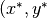) is given by
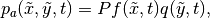
where
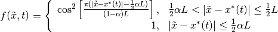
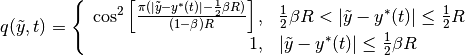
on the rectangle 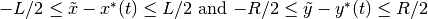, and zero outside this region,  and
and  represent the length and width of the pressure source, respectively.
represent the length and width of the pressure source, respectively.  and
and  are parameters representing the shape of the draft region and 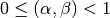. They can be evaluated using the block coefficient of a watercraft as described below. (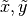) is the coordinate system for the pressure disturbance which may be rotated by an angle relative to the Boussinesq coordinate system (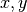).
are parameters representing the shape of the draft region and 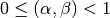. They can be evaluated using the block coefficient of a watercraft as described below. (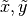) is the coordinate system for the pressure disturbance which may be rotated by an angle relative to the Boussinesq coordinate system (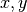).  is a parameter controlling the surface displacement. In fact, is the static depression around the vessel.
is a parameter controlling the surface displacement. In fact, is the static depression around the vessel.
In contrast to the formulation of the pressure distribution in the previous study such as Torsvik et al. (2008), has a unit of meters and can be interpreted as the inverse barometer effect corresponding to the static surface depression for a stationary vessel.
The values of and are shape parameters and can be obtained by adjusting and to get the displaced volume (static submerged volume of the vessel)
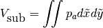
which should match a given block coefficient 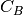 defined by
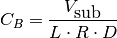
in which  represents draft of a vessel.
represents draft of a vessel.